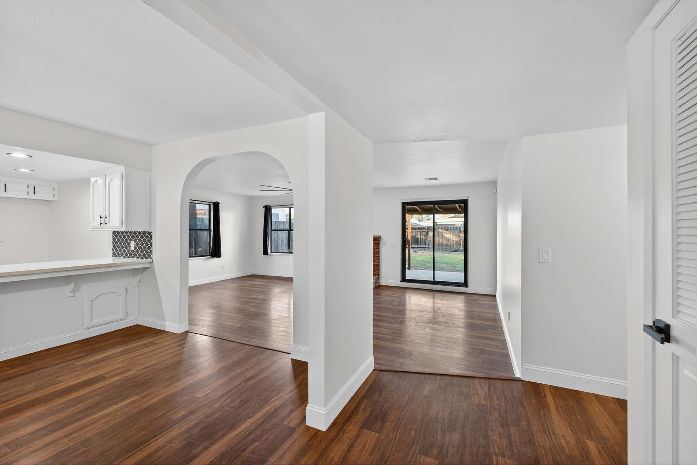
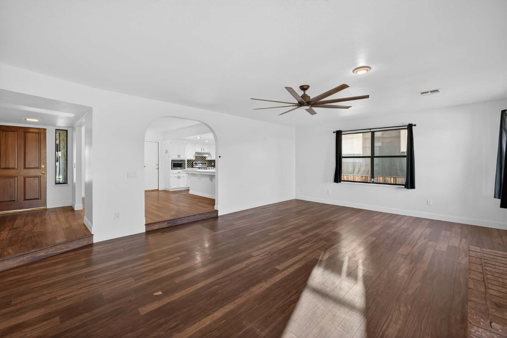
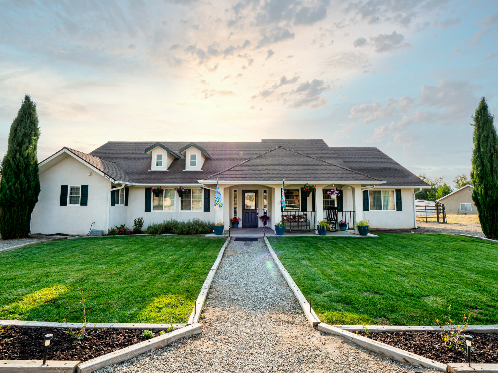
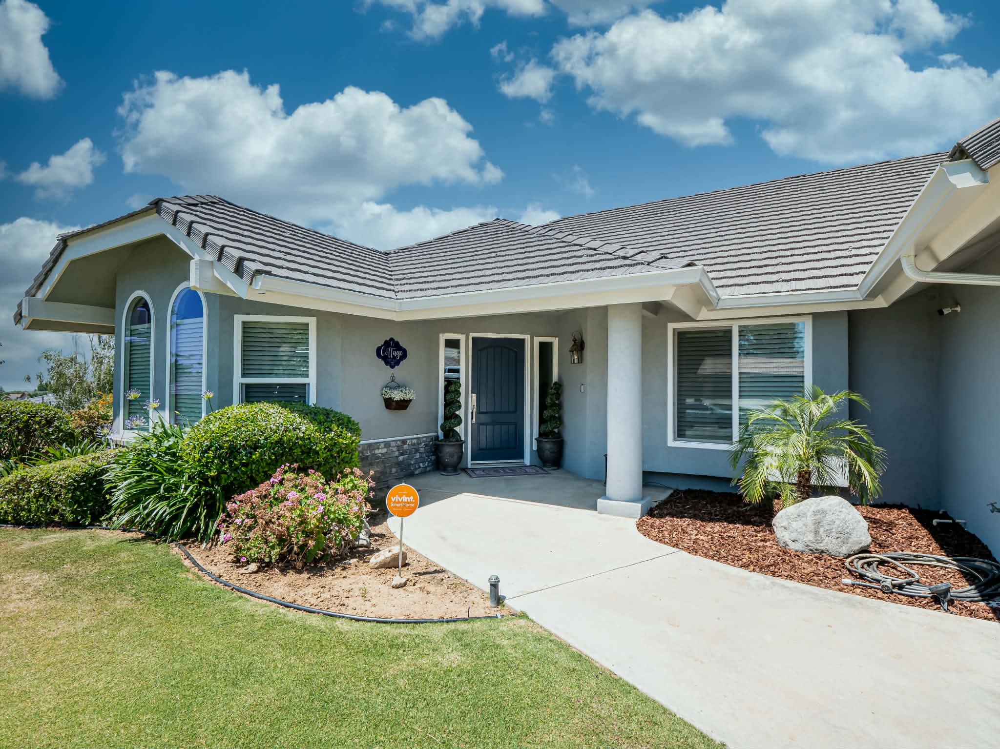
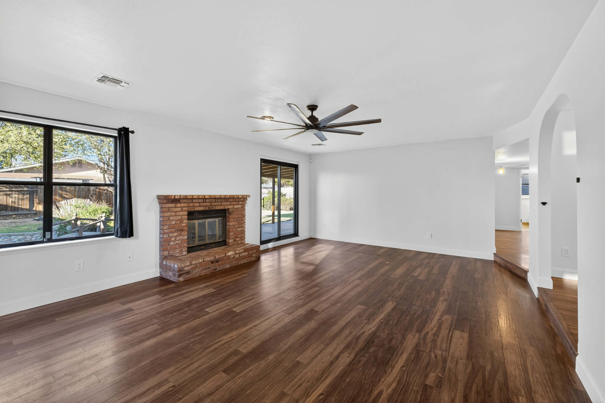
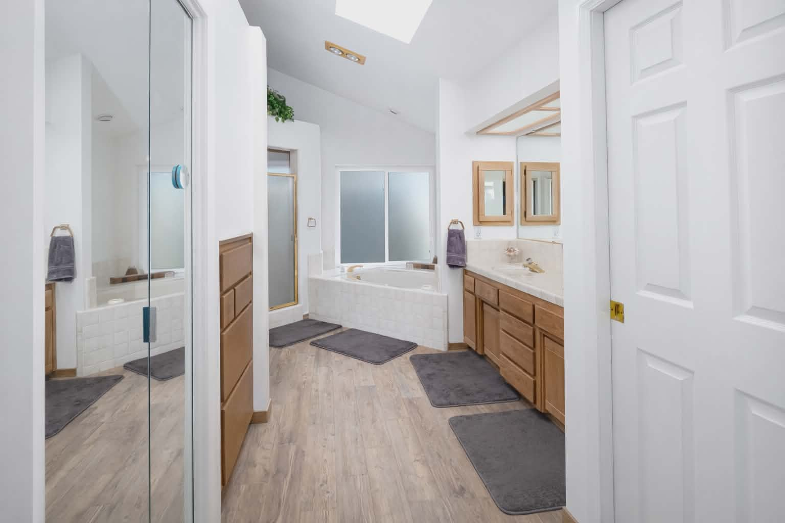
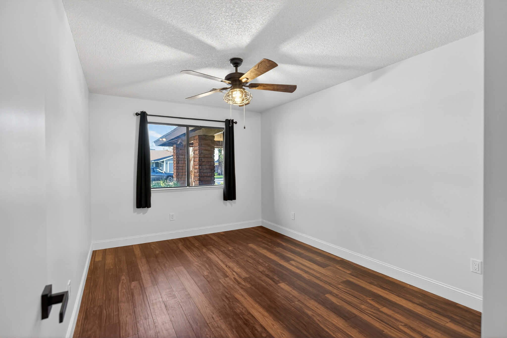

Real Estate Photography in Bakersfield & Kern County
CLEAN. FAST. COMPLIANT.
William Dean is a real estate photographer in Bakersfield, CA, delivering clean, market-ready photos for residential and commercial listings across Kern County. Every shoot is MLS-compliant, fast to deliver, and built for both listing platforms and social media. Agents book William when they need consistent, technically disciplined listing visuals—not random photographers.
Why Bakersfield Agents Hire William Dean
Standardized excellence for the Bakersfield market. Perception shapes price—your listing competes on emotion, trust, and first-scroll impact.
Serving: Bakersfield, Oildale, Rosedale, Northwest/Southwest/East Bakersfield, Shafter, Wasco, Delano, and surrounding communities.
Next-day delivery of MLS-ready assets so your listing hit the market while the lead is hot. Zero friction from shoot to upload.
MLS Compliant visuals. No over-processed "HDR glow" or distorted lenses—just clean lines and accurate light that agents trust.
Who You’re Hiring — and Why That Matters
This is not just someone with a camera. This is a craft-driven operator built on discipline, speed, and detail.

William Dean Photography
William is a veteran tattooer and professional photographer working under the same roof in Downtown Bakersfield. Tattooing taught him permanence, precision, patience, and respect for light. Real estate photography became the next expression of that same standard: no gimmicks, no overcooked edits, just honest light, clean lines, and visual control that helps agents win trust faster.
Psychological edge for your listings: buyers decide in seconds whether a home feels credible, elevated, and worth acting on. Clean verticals, accurate white balance, balanced window pulls, and emotionally tuned marketing visuals drive that decision before logic even starts. That is where William’s work creates leverage.
Portfolio: Technically Clean, Emotionally Dialed
Clean HDR images, sharp verticals, balanced natural/interior light, and listing visuals that are both MLS-safe and social-media effective.








Services & Workflow
1) Core Photo Coverage
Full residential and commercial real estate photography for Bakersfield and Kern County listings. Clean HDR capture, straight verticals, and accurate color designed for MLS, Zillow, Redfin, and brokerage sites. Most Bakersfield listing shoots fall between $175–$350.
2) Marketing Add-Ons
Twilight edits, twilight-style marketing images, AI staging, and AI walk-through videos that stand out in Bakersfield’s competitive feeds. These assets are built to perform on Instagram, Facebook, and agent branding campaigns while staying grounded in the true character of the property.
3) Fast Turnaround, Zero Friction
Bakersfield listing shoots are scheduled within a few days, with delivery in 24hr hours. Call/text 865-364-0099, schedule, shoot, and receive polished, MLS-ready assets via online gallery without the back-and-forth drama.
Bakersfield Agents: If You’re Listing This Week, Let’s Elevate It.
For agents who want consistency, technical discipline, and emotionally persuasive visuals that convert attention into calls.